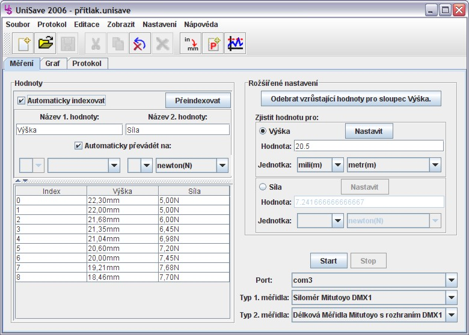

Hlavní okno aplikace, kde se zobrazují naměřené hodnoty. Ty jsou získávané z
vybraných měřidel. Pro získání hodnot je nejprve nutno celý proces odstartovat
tlačítkem Start, které je rovněž v tomto okně.

V levé části okna aplikace se nachází seznam naměřených hodnot pole, která umožňují nastavovat názvy hodnot a převádět naměřené hodnoty do předem zvolených jednotek. Podrobný popis zobrazovaných hodnot a s nimi spojeného nastavení se nachází zde.
Zde je možné nastavit hledanou hodnotu, pro kterou se zjišťuje odpovídající hodnota z druhého sloupce i v případě, že hledaná hodnota nebyla přímo naměřena.
Také je zde možno odebrat vzrůstající hodnoty z prvního sloupce tabulky. Podrobnější popis se nachází zde.
Měřidlo je nejprve nutno připojit k počítači,
pak lze spustit na počítači samotný proces načítání hodnot tlačítkem
Start. Poté je počítač připraven a všechny hodnoty, které měřidlo zašle
jsou zaznamenány v programu. Podrobný popis se nachází
zde.
GrafZde je možno nastavit vlastnosti grafu, který je vkládán do výsledného protokolu a může být rovněž zobrazován v průběhu měření přímo na počítači. Podrobný popis naleznete zde.
ProtokolV této záložce je možno nastavit vlastnosti protokolu, který lze vygenerovat po ukončení měření. Podrobný popis naleznete zde.